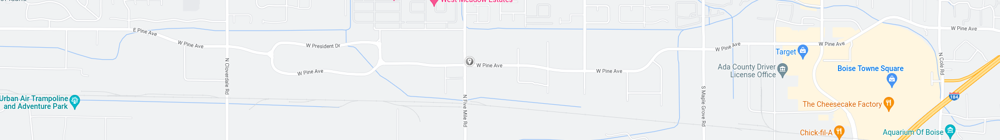

Styl.us
Turn your pen into your best friend
Make every line you write count..
Natural writing
Don't change your habits, write with a pen on paper notebooks
Sync. copy
Stylus instantaneously copy your text on your computer, in real-time
Analytics
Get feedbacks on the way you write, your favorite words, your frequent mistakes
Storing your texts
Everything written with your stylus is stored in the cloud, so that it's never lost
Get news from Stylus
Leave us your mail and get stylus news
